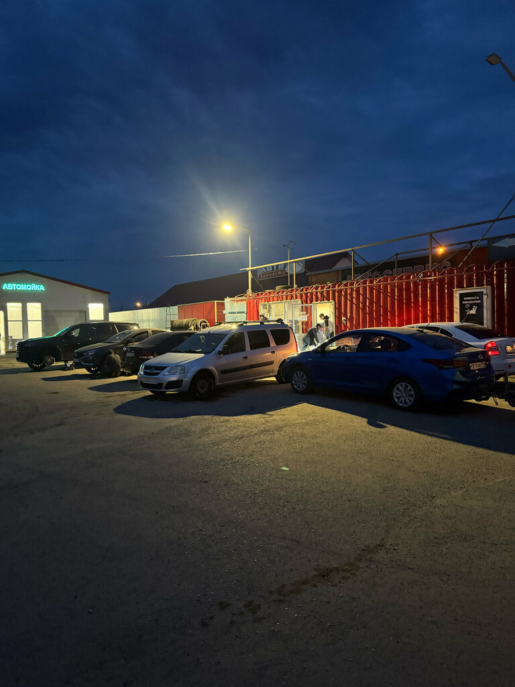

Абсолютная точность обслуживания.
Автосервис и запчасти в одном месте.
Прозрачный регламентный ремонт и ТО для иномарок и отечественных авто в Канаше. Компьютерная диагностика на дилерских сканерах, собственный склад 8 000+ запчастей прямо при сервисе и фиксированная гарантия Гарантия сезона.

Интерактивный радар ТО по пробегу
Выберите класс вашего автомобиля и пройденный километраж. Система сформирует заводской перечень процедур, рассчитает фиксированную цену и позволит забронировать свободный пост в 1 клик.
Шиномонтаж «Ни гвоздя»
Класс: Отечественные • Регламент 15 000 км
Услуги шиномонтажного комплекса
Фиксированные цены на переобувку, правку литых дисков, аргонную сварку, дошиповку и ремонт шин любой сложности.
Стандарты честного сервиса
Никаких навязанных услуг и скрытых переплат. Прозрачные правила работы, подтвержденные сотнями отзывов клиентов.
Отзывы клиентов (Рейтинг 4.8)
Как проехать в шиномонтаж
Шиномонтаж «Ни гвоздя» расположен по адресу ул. Красноармейская в Канаше. Удобный широкий заезд и асфальтированная парковка. Удобный заезд с асфальтированной парковкой и зоной ожидания для клиентов.